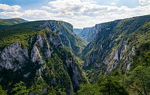
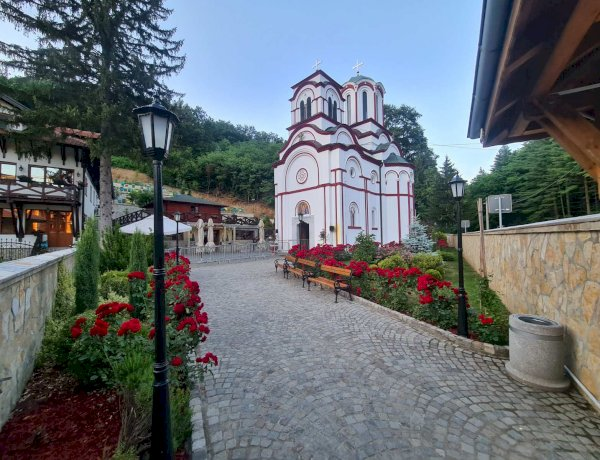
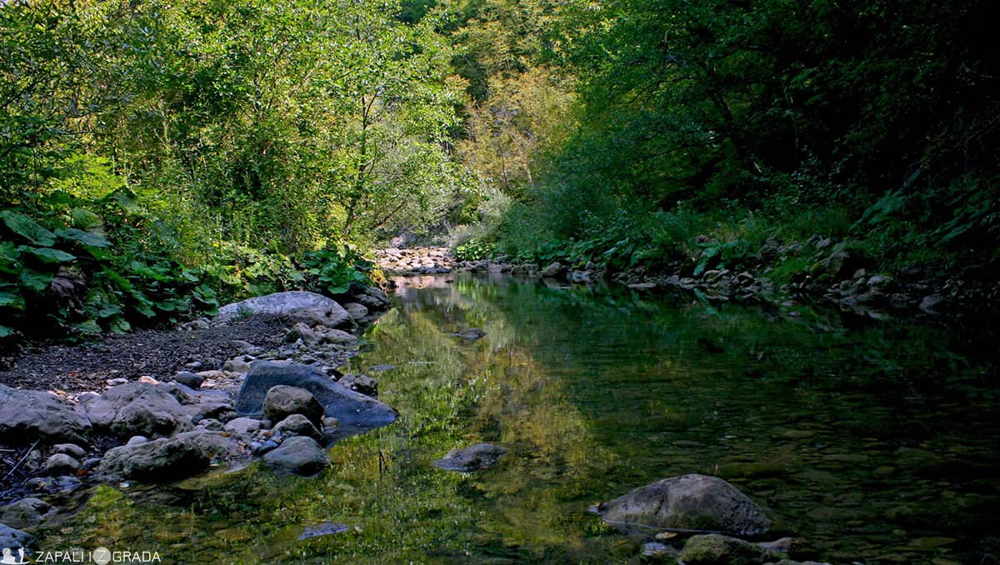

Prikaz svih raspoloživih tura

Homoljske planine - Mali i Veliki Vukan 06.04.2024.
Homoljske planine se nalaze u istočnoj Srbiji i pripadaju grupi Karpatsko-balkanskih planina.Sastoje se pretežno od škriljaca i krečnjaka...
Mesto održavanja: Ždrelo, Petrovac na Mlavi
Datum održavanja: 06.04.2024.
Težina: 7
Broj prijavljenih učesnika: 30
Broj slobodnih mesta: 20
Detaljnije

Lazarev kanjon i Lazareva pećina, najduža pećina u Srbiji 13.04.2024.
Velelepni i mistični Lazarev kanjon, u blizini Bora, jedan je od najvećih bisera i spomenika prirode u istočnoj Srbiji. Po legendi u njemu su se skrivali još konjanici Kneza Lazara...
Mesto održavanja: Lazareva Pećina, Zlot
Datum održavanja: 13.04.2024.
Težina: 3
Broj prijavljenih učesnika: 10
Broj slobodnih mesta: 40
Detaljnije

Manastir Tumane – Golubačka tvrđava 15.04.2024.
Manastir Tumane je srpski pravoslavni manastir iz 14. veka, koji pripada braničevskoj eparhiji. Nalazi se na devet kilometara udaljenosti od Golupca...
Mesto održavanja: Manastir Tumane, Golubac
Datum održavanja: 15.04.2024.
Težina: 8
Broj prijavljenih učesnika: 47
Broj slobodnih mesta: 13
Detaljnije

Specijalni rezervat prirode “Klisura reke Trešnjice” i Jeličke stene (875mnv) 20.04.2024.
Ovog vikenda ćemo ugađati svojim planinarskim čulima, lepotom koraka,snagom mirisa i boja proleća u Specijalnom rezervatu prirode „Klisura reke Trešnjice“....
Mesto održavanja: Klisura reke Trešnjice, Gornja Trešnjica
Datum održavanja: 14.05.2024.
Težina: 5
Broj prijavljenih učesnika: 27
Broj slobodnih mesta: 23
Detaljnije